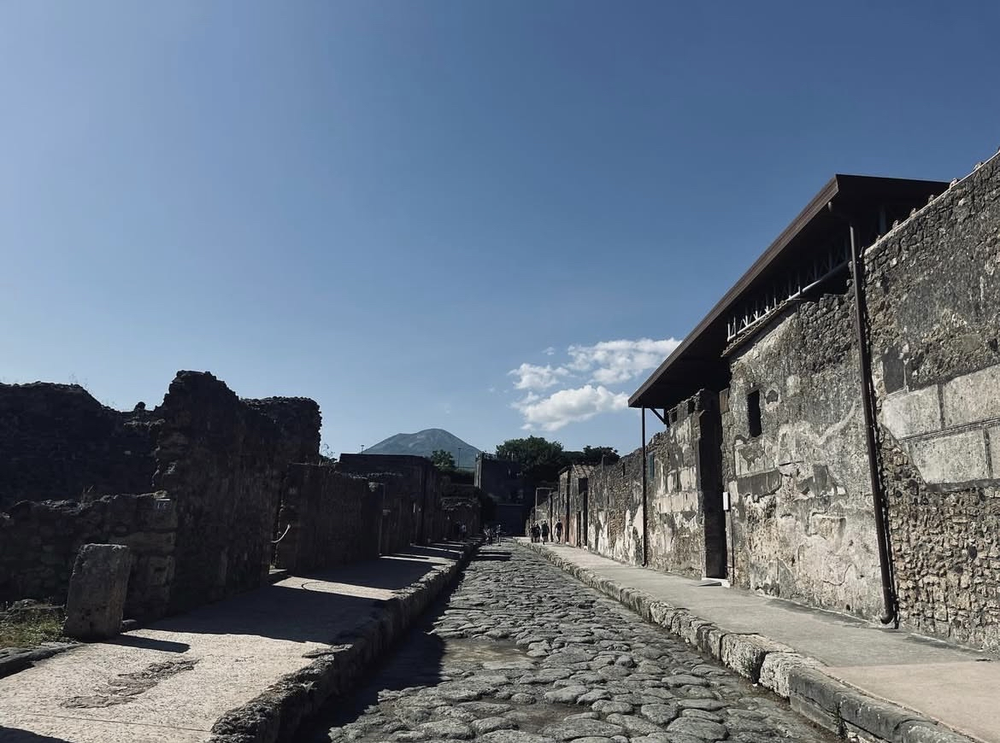
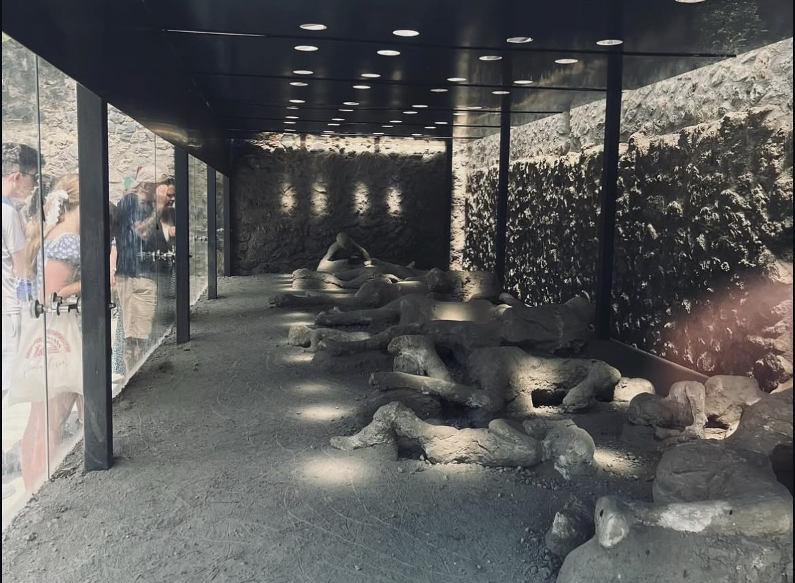
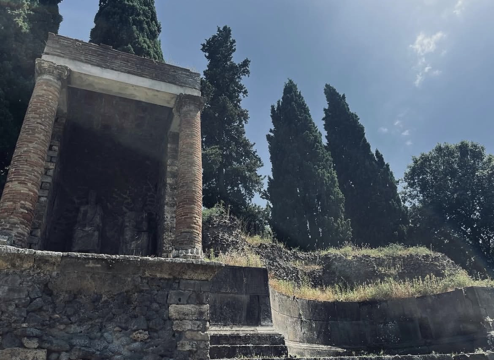
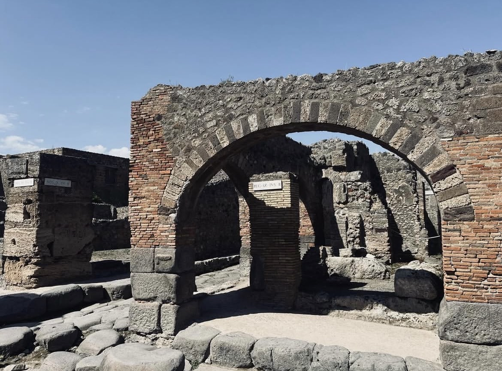

There's something profoundly unsettling about walking down a 2,000-year-old street and seeing the wheel ruts from Roman carts still carved into the stone. Or standing in someone's kitchen where you can still see the oven they used to bake bread on the morning everything ended. Pompeii isn't just an archaeological site. It's a snapshot of Roman life that was violently interrupted and then perfectly preserved for two millennia.
Hannah and I visited Pompeii in June 2024 during our backpacking trip through Europe. We'd just flown in from Tirana, Albania, and landed in Naples specifically to see this place. After visiting 40 countries at this point and seeing countless historical sites, Pompeii still managed to completely blow us away. It's one thing to read about the eruption of Mount Vesuvius in 79 AD. It's another thing entirely to walk through the actual streets where people were living their normal lives until a volcano buried them in ash.
We'll 100% go back. There's just so much to see, and the weight of what happened there stays with you long after you leave.
What Actually Happened: The Day Vesuvius Erupted
Let me set the scene, because understanding what happened makes visiting Pompeii so much more powerful.
On the morning of August 24th, 79 AD (though some scholars now think it was October), Pompeii was a thriving Roman city of about 11,000-20,000 people. It was a wealthy resort town where rich Romans had vacation villas. The city had theaters, bath houses, brothels, bakeries, taverns, shops, and all the infrastructure of a sophisticated Roman settlement.
Mount Vesuvius loomed over the city, but no one knew it was a volcano. It had been dormant for so long that it was covered in vineyards and forests. People lived on its slopes. There was no concept of volcanic risk.
Then, around 1pm, Vesuvius exploded.
"The city was buried under 20 feet of volcanic material and essentially forgotten for nearly 1,700 years."

The eruption sent a column of ash, pumice, and rock 20 miles into the atmosphere. For the next 18-20 hours, this material rained down on Pompeii, burying the city in up to 10 feet of volcanic debris. Most people fled during this phase, but some stayed in their homes, either unable to escape or thinking they could wait it out.
Then came the pyroclastic surges. These are superheated clouds of gas, ash, and rock that race down the sides of a volcano at speeds of up to 450 mph and temperatures of 300-400°C. There's no outrunning them. When the surges hit Pompeii in the early hours of August 25th, everyone still in the city died instantly.
The Frozen Victims: The Most Haunting Part
This is what really gets you about Pompeii. The pyroclastic surges killed everyone so quickly that they were frozen in their final moments. The ash hardened around their bodies, and over time, the bodies decomposed, leaving perfect hollow spaces in the exact shape of the person in the moment they died.
In the 1860s, archaeologist Giuseppe Fiorelli had the idea to pour plaster into these voids, creating casts of the victims. What you see when you visit Pompeii are these plaster casts of real people who died 2,000 years ago.
We saw several of them during our visit, and I'm not going to lie, it's confronting. You see people curled up, trying to protect themselves from the heat and ash. Families huddled together. A dog chained up, unable to escape, frozen mid-struggle.
One of the most famous is "The Garden of the Fugitives," where 13 people died trying to flee together. You can see adults shielding children, people clutching whatever possessions they'd grabbed. These aren't ancient skeletons in a museum. These are people in the exact position they were in when they died, with their final moments preserved forever.

Getting to Pompeii from Naples
We took the train from Naples, which is the easiest and cheapest way to get there. From Naples Centrale station, you take the Circumvesuviana train line toward Sorrento and get off at "Pompei Scavi - Villa dei Misteri" station. The journey takes about 35-40 minutes and costs around €3-4 each way.
The train itself is pretty basic (no air conditioning, can get crowded), but it's frequent and drops you right at the entrance to the archaeological site. The station is literally called "Pompeii Excavations" so you can't really miss it.

Entry and Tickets
Entry to Pompeii costs €18 per person (as of 2024). You can buy tickets at the entrance, but I'd recommend booking online in advance, especially if you're visiting in peak season. The queues can be long, and pre-booking lets you skip straight to the entrance.
The site is absolutely massive (66 hectares), so give yourself at least 3-4 hours minimum. We spent about 5 hours there and still didn't see everything.
What You're Actually Looking At
Pompeii is enormous, and it can be overwhelming when you first arrive. Here's what we found most impressive:
- The Forum: The center of public life. Standing here and looking at Vesuvius looming in the background drives home the tragedy.
- The Streets and Houses: Walking Roman streets with stepping stones and cart ruts. The House of the Faun is a highlight.
- The Brothel (Lupanar): Fascinating frescoes and a reminder of every aspect of Roman life.
- The Amphitheater: One of the oldest surviving in the world, built around 70 BC.
- The Plaster Casts: The most haunting and human part of the experience. Found in various locations like the Garden of the Fugitives.
- The Bakeries: Seeing ovens still intact where someone was baking bread 2,000 years ago.
Mount Vesuvius: The Volcano That's Still Active
Mount Vesuvius is still an active volcano. It's been dormant since 1944, but it's not extinct. It's considered one of the most dangerous volcanoes in the world because of the 3 million people living in the surrounding area.
Standing in Pompeii and looking up at Vesuvius, knowing it could erupt again, adds an element of ongoing threat and urgency to the whole experience.
Practical Tips for Visiting Pompeii
What to Bring:
- Comfortable walking shoes (ancient stones are uneven)
- Sun protection (hat, sunscreen, sunglasses)
- Water (there are fountains, but start with your own)
- Charged phone for maps and photos
Best Time to Visit:
Try to visit in spring (April-May) or fall (September-October). June was scorching! Get there early (9am) to avoid the heat and crowds.

Final Thoughts
Pompeii is one of those places that changes how you think about history. It's not abstract dates and events in a textbook. It's real people who lived real lives.
We'll absolutely go back. There's still so much we didn't see, and standing in the Forum, looking up at Vesuvius, knowing what happened here, it's hard not to feel the weight of it all. It's not just about seeing ruins. It's about connecting with real human history in a way that very few places allow.